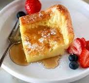

German Pancakes
Home

Description
This German pancake recipe is light, fluffy, and easy to make with ingredients you likely already have on hand.
A German pancake (a.k.a. a Dutch baby) is similar to a large Yorkshire pudding. Unlike other types of pancakes, German pancakes are baked in the oven instead of fried on the stove. They also do not contain leaving ingredients, such as baking powder or baking soda.
Ingredients
- ¼ cups of butter
- 1 cup all-purpose flour
- 1 cup whole milk
- 6 large eggs, lightly beaten
- ⅛ teaspoon of salt
Directions
- Gather all ingredients.
- Preheat the oven to 350 degrees F (175 degrees C). Melt butter in a medium baking dish.
- Mix flour, milk, eggs, and salt in a medium bowl.
- Pour the mixture into the prepared baking dish.
- Bake on center rack in the preheated oven for 30 to 40 minutes, until golden brown.